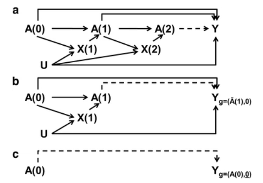

G-estimation of structural nested models#
‘G-estimation refers to the method of estimating the parameter(s) (see below) and does not specify the model. Most implementations of g-estimation are for structural nested models.’ G-estimation of structural nested models (SNM) is a method first proposed by Robins (1986). It’s applications include:
Adjusting for time-varying confounded affected by prior exposure/treatment (treatment-confounder feedback)
Mediation analysis (when exposure affects a confounder of the mediator-outcome relationship) [Picciotto and Neophytou 2016]
Description of method: ‘G-estimation of structural nested models (SNM) predicts the counterfactual outcome at each time point given no exposure from that point onwards, conditional on prior values of the exposure and confounders.’ [Igelström et al. 2022] In other words, ‘these models control for time-varying confounding affected by previous treatment (exposure) by modeling the outcome at each time as a function of the treatment and covariate history up to that time’. [Williamson and Ravani 2017] The models are “nested” as we conceptualise the longitudinal data as a nested series of trials. In this approach:
Analyse last trial first. We adjust for past exposures and covariates.
Once the relationship between that exposure and the outcome is understood, the method analytically “removes” the effect of that final exposure from the outcome. This process is repeated at each time point m, for m taking every value down to the beginning of follow-up, after “intervening” to remove exposures occurring at all later time points.
At the end, the counterfactual outcome has been estimated for each individual under a regimen of being always unexposed/untreated, as a function of observed variables and the unknown parameter’ [Picciotto and Neophytou 2016]
Estimation of the parameters using G-estimation: ‘In applications, the process entails a grid search or optimization algorithm in which hypothetical values for the parameter are used to calculate candidate values for counterfactual outcomes for each individual under no exposure/treatment. Unlike, for example, a maximum likelihood estimation procedure, g-estimation directly leverages the assumption of conditional exchangeability by determining which set of candidate counterfactual outcomes is statistically independent of observed exposures, conditional on previously measured covariates and treatments/exposures. This can be done by including the candidate counterfactual outcome along with earlier covariates and exposures in a model predicting observed exposure and checking whether the coefficient for the candidate counterfactual outcome is zero. The parameter value that was used to calculate that set of candidate counterfactual outcomes is the g-estimate’ [Picciotto and Neophytou 2016]
Diagram from Picciotto and Neophytou 2016:

Assumptions:
Consistency - true if treatment is well-defined or various versions of treatment have equivalent effects
Conditional exchangeability (“no unmeasured confounders”)
Correct specification of models
No interference (“stable unit treatment value assumption”)
Does not require the positive assumption [Picciotto and Neophytou 2016]
Classes of structural nested models:
Structural Nested Mean Models - studies ‘the change (difference or ratio) in the mean of an outcome that is a continuous variable (e.g., a biomarker) as a function of time-varying treatment or exposure, conditional on observed history of covariates’
Structural Nested Cumulative Failure Time Models - ‘outcome under study is the risk of a failure event at each time point, not just at the end of follow-up’
Structural Nested Accelerated Failure Time Models - ‘Rather than the risk of outcome at each time point, this class of models considers length of survival time as the outcome; time to event can be accelerated or delayed by exposure. Furthermore, instead of the change in counterfactual outcome due to a change in exposure, structural nested accelerated failure time models (SNAFTMs) model the counterfactual outcome itself: (median) counterfactual survival time if unexposed is modeled as a function of observed variables’ [Picciotto and Neophytou 2016]
Variations:
Optimal Dynamic Treatment Regimen
Double Robustness [Picciotto and Neophytou 2016]
G-computation + IPTW#
‘Some authors have proposed combinations of G-computation and propensity scores to improve the estimation of the marginal causal effect. These methods are known as doubly robust estimators (DRE) because they require the specification of both the outcome (for GC) and treatment allocation (for PS) mechanisms to minimise the impact of model misspecification’. [Chatton et al. 2020]